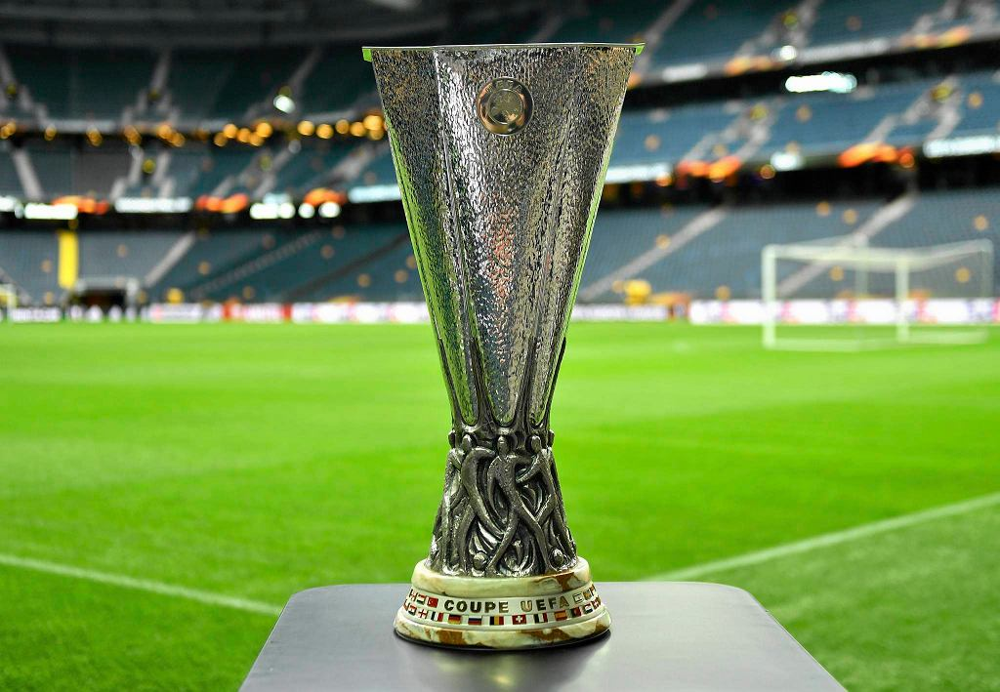

Trofeum sportowe
Obecny puchar jest szóstym gdyż pozostałe zostały wręczone na stałe zespołom, które spełniły wcześniej opisane warunki. Obecny puchar jest z 2006 r., wykonany po piątym zwycięstwie w zawodach Liverpoolu i uzyskaniu trofeum na własność. W 2009 r. UEFA przyjęła zasadę, że nagroda rzeczowa UEFA Champions League nie będzie darowana zwycięzcom pięciokrotnym lub trzykrotnym z rzędu, a zespół zwycięski będzie mógł wykonać kopię 1:1. Na pucharze turnieju jest grawerowana nazwa zwycięzcy rywalizacji.
